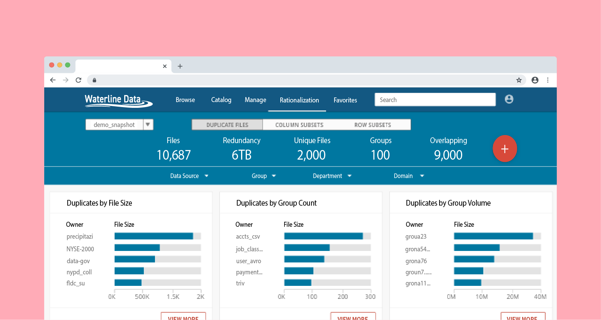

Waterline Data
Software Engineering and UX Design Intern
Waterline Data is a startup specializing in data analytics software. My work focused on the company's enterprise data catalog, where I implemented an error tracking and logging system on the product's UI and REST API.
I also researched implementations for the product's content identification feature, which categorized data into smaller subgroups (e.g., name, population) and identified duplicate data sources labeled under different names.
Although I initally joined as a software engineering intern, I volunteered to pick up additional work for the UX team, where I contributed UX mockups, visual designs, and user research reports for new product features.
With the help of my UX mentor, I prototyped and shipped a feature allowing users to request changes to datasets with inaccurate data or discrepancies with the data's compliance to General Data Protection Regulation (GDPR) laws.
Java, Angular.js, Apache Spark, Hadoop, Sketch, Balsamiq, Jira